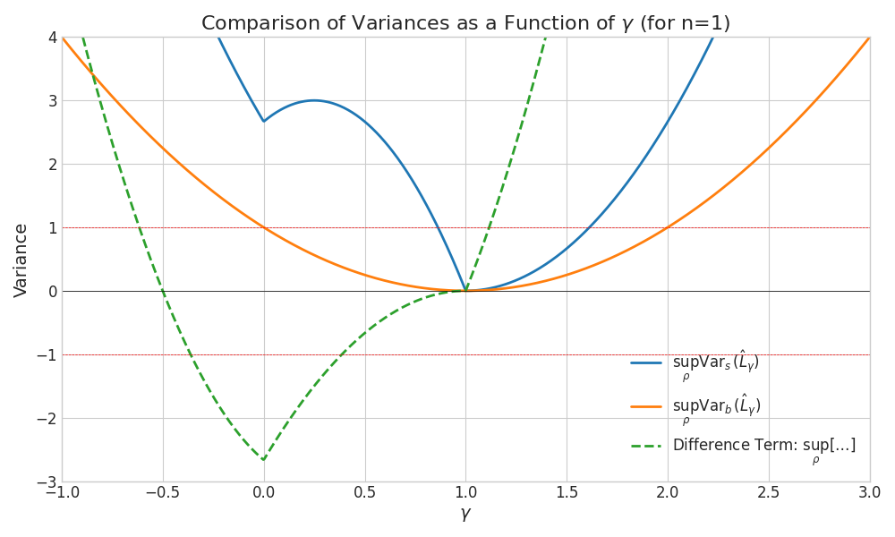

3-design Multi-copy Local Shadow
Local k-copy 3-design shadow.
Now we consider the case that we can put \rho^{\otimes k} in quantum memory and then implement randomized k-qubits Clifford gate U = {U_i}^{\otimes n} with U_i \in \mathbf{D}_{3}(2^k) the k-qubits gate and forms 3-design. After this, we measured each qubit in the computational basis.
Proof. By Lemma (onsite_2design) \mathcal{D}_{1/(2^k + 1)}^{-1}(\cdot) = (2^k + 1)(\cdot) - \text{tr}(\cdot) \mathbb{I}_k constitute an unbiased estimator of \rho^{\otimes k} through the transformation \hat{\rho}^{\otimes k} =\mathcal{M}^{-1}(U^\dagger \ket{\mathbf r}\!\bra{\mathbf r} U)=\bigotimes_{i =1}^n\left((2^k + 1)U_i^{\dagger} \ket{\mathbf{r}_{i}}\bra{\mathbf{r}_{i}} U_i - \mathbb{I}_k\right). The second moment is given by \langle (\hat{o}^{(2)})^2 \rangle_{\rho} =\mathbb{E}_{U \sim \mathbf{D}_3(2^k)^{\otimes n}}\sum_{\mathbf r}\bra{\mathbf r}U \rho^{\otimes k} U^\dagger \ket{\mathbf{r}} \bra{\mathbf r}U\mathcal{M}^{-1}(O^{(k)}) U^\dagger\ket{\mathbf r}^2. Similar to the proof in Lemma (LC_shadow) the Pauli product basis W_i \in \{I,X,Y,Z\}^{\otimes k} that supports on those k qubits located at site i. By denoting W = W_1\cdots W_n, we have O^{(k)} = \sum_{W} \alpha_{W} W. According to Lemma (onsite_2design) \mathcal{M}^{-1} acts locally as \mathcal{M}_i^{-1}(W_i) = g(W_i) W_i, where the scaling factor g(W_i) is determined by g(W_i) = \begin{cases} (2^k+1) & \text{if~} W_i \neq \mathbb{I}_k \\ 1 &\text{if~} W_i = \mathbb{I}_k \end{cases}. Use this decomposition and again supposed \rho^{\otimes k} = \sum_{s} \beta_s \bigotimes_{i=1}^n \rho_i^{(s)}, where \rho_i^{(s)} \in \mathcal{D}(\mathcal{H}_k), the result involves averaging over the k-qubit 3-design U_i \sim \mathbf{D}_3(2^k) as: \begin{align*} \langle (\hat{o}^{(k)})^2 \rangle_{\rho} &= \sum_{W,W'}\alpha_{W}\alpha_{W'}\sum_{s}\beta_s\prod_{i = 1}^n g(W_i)g(W'_i)\sum_{\mathbf{r}_i \in \{0,1\}^k} \left[({\rho}^{(s)}_i \otimes W_i \otimes W'_i) \cdot \mathbb{E}_{U_i} U_i^{\otimes 3}\ket{\mathbf{r}_i}\!\bra{\mathbf{r}_i}^{\otimes 3}U_i^{\otimes 3,\dagger}\right] \\ &= \sum_{W,W'}\alpha_{W}\alpha_{W'}\sum_s \beta_s\prod_{i = 1}^n 2^k p \cdot g(W_i)g({W'}_i) \Bigl[ \text{tr}(W_i)\text{tr}(W'_i)\text{tr}({\rho}^{(s)}_i) + \text{tr}({\rho}^{(s)}_i W_i)\text{tr}(W'_i) \notag\\ & \qquad\qquad\qquad + \text{tr}(W_i)\text{tr}({\rho}^{(s)}_i W'_i)+\text{tr}({\rho}^{(s)}_i)\text{tr}(W_iW'_i) + \text{tr}(W_i {\rho}^{(s)}_i W'_i) + \text{tr}(W'_i {\rho}^{(s)}_i W_i) \Bigr]. \end{align*}
Here we use the fact that the term \ket{E} :=U_i\ket{\mathbf{r}_i} is average over the 3-design states, yielding terms based on the formula \mathbb{E} [E^{\otimes 3}] ={d^{-1}(d+1)^{-1}(d+2)^{-1}} \sum_{\pi \in S_3} \mathbb{P}_{\pi}^{(d)} according to Lemma (state_trajectory) site is p = 1/(2^k \cdot (2^k+1) \cdot (2^k+2)). We evaluate the expression by considering terms for each site i, analogous to the single-copy proof of Lemma (LC_shadow) \begin{align*} \langle (\hat{o}^{(2)})^2 \rangle_{\rho} &= \sum_{W,W'}\alpha_{W}\alpha_{W'}\sum_{s}\beta_s\prod_{i = 1}^n 2^k p \cdot \begin{cases} 1\cdot 1\cdot [2^{2k}+3\cdot 2^k+2]\text{tr}{\rho}^{(s)}_i &\text{if~} W_i=W_i' = \mathbb I_k,\\ 1 \cdot (2^k+1) \cdot[2^k + 2]\cdot \text{tr}({\rho}^{(s)}_i W'_i)&\text{if~} W_i = \mathbb I_k \neq W'_i,\\ (2^k+1) \cdot 1 \cdot[2^k + 2]\cdot \text{tr}({\rho}^{(s)}_i W_i)&\text{if~} W'_i = \mathbb I_k \neq W_i,\\ (2^k+1)^2 \cdot[2^k\delta_{W_i, W'_i}\text{tr}{\rho}^{(s)}_i + \text{tr}({\rho}^{(s)}_i\{W_i,W_i'\})]&\text{if~} W_i, W'_i \neq \mathbb I_k. \end{cases}\\ % &=\sum_{W,W'}\alpha_{W}\alpha_{W'}\sum_{s}\beta_s\prod_{i = 1}^n \begin{cases} % \text{tr}{\rho}^{(s)}_i &\text{if~} W_i=W_i' = \mathbb I_k,\\ % \text{tr}({\rho}^{(s)}_i W'_i)&\text{if~} W_i = \mathbb I_k\neq W'_i,\\ % \text{tr}({\rho}^{(s)}_i W_i)&\text{if~} W'_i = \mathbb I_k\neq W_i,\\ % \frac{2^k+1}{2^k+2} \cdot\text{tr}\left[(2^k\delta_{W_i, W'_i}\mathbb{I}_k +2\delta_{W_i, \mathcal{C}(W'_i)\backslash \mathbb{I}_k} W_iW_i'){\rho}^{(s)}_i\right]&\text{if~} W_i, W'_i \neq \mathbb I_k. % \end{cases}\\ &= \sum_{W,W'}\alpha_{W}\alpha_{W'}\cdot \sum_{s}\beta_s\prod_{i = 1}^n \begin{cases} \text{tr}({\rho}^{(s)}_i W_iW'_i) &\text{if~} W_i=W_i' = \mathbb I_k,\\ \text{tr}({\rho}^{(s)}_i W_i W'_i)&\text{if~} W_i = \mathbb I_k\neq W'_i,\\ \text{tr}({\rho}^{(s)}_i W_i W'_i)&\text{if~} W'_i = \mathbb I_k\neq W_i,\\ \frac{2^k+1}{2^k+2} \cdot\text{tr}\left[{\rho}^{(s)}_i(2^k\delta_{W_i, W'_i}+2\delta_{W_i, \mathcal{C}(W'_i)\backslash \mathbb{I}_k})W_iW_i'\right]&\text{if~} W_i, W'_i \neq \mathbb I_k. \end{cases}\\ &=\text{tr}\left( \rho^{\otimes k}\cdot \sum_{W,W' \in \mathcal{P}_k^{\otimes n}} \alpha_{W}\alpha_{W'} R(W,W') W W'\right). \end{align*} To prove the second equality, we first defined \mathcal{C}(W) as the set of k-qubit Pauli operator that commute with W and \delta_{e,S} = 1 iff e\in S, otherwise \delta(e,S) = 0. Then we use the fact that \begin{align*} \forall W_i, W'_i \neq \mathbb I_k, \text{tr}({\rho}^{(s)}_i\{W_i,W_i'\}) = \begin{cases}0 \!\!\!&\text{if~} W'_i \notin \mathcal{C}(W_i)\backslash \mathbb{I}_k\\2\text{tr}(\tilde{\rho}^{(s)}_i W_iW'_i) \!\!\!&\text{if~} W_i \in \mathcal{C}(W'_i)\backslash \mathbb{I}_k \end{cases} = 2\delta_{W_i, \mathcal{C}(W'_i)\backslash \mathbb{I}_k} \text{tr}(\tilde{\rho}^{(s)}_i W_iW'_i), \end{align*} In the last equality, we use the definition \begin{align*} R(W,W') &= \prod_{i = 1}^n r(W_i,W'_i), r(W_i,W'_i) &:= \begin{cases} 1 &\text{if~}W_i = \mathbb{I}_k \text{~or~}W'_i = \mathbb{I}_k ,\\ (2^k+1) \cdot \frac{2^{k-1}\delta_{W_i,W'_i} +\delta_{W_i, \mathcal{C}(W'_i)\backslash \mathbb{I}_k } }{2^{k-1}+1} &\text{if~}W_i \neq \mathbb{I}_k \text{~and~} W'_i \neq \mathbb{I}_k . \end{cases} \end{align*} ◻
The inherient difference between the single-copy local Clifford strategy contained in the term \delta_{W_i, \mathcal{C}(W'_i)}. In the single-copy case, the center of P_i \in \{X,Y,Z\} satisfied \mathcal{C}(P_i) = \{P_i, \mathbb{I}\}. However, for example, for the two-qubit Pauli operators, more terms involved. We denote the n-qubit Pauli operators as \sigma_{\mathbf{r}} = \bigotimes_{i=1}^n \sigma_{{r}_{x,i},{r}_{z,i}} \in \mathcal{P}_n with \mathbf{r} = (\mathbf{r}_x = ({r}_{x,1},\cdots,{r}_{x,n}),\mathbf{r}_z = ({r}_{z,1},\cdots,{r}_{z,n})) \in (\mathbb{F}_2^n)^2 and \{\sigma_{00},\sigma_{01},\sigma_{10},\sigma_{11}\} = \{\mathbb{I}, Z,X,Y = iXZ\}. We denote a \oplus b = a + b \mathrm{~mod~}2 = a + b - 2a\cdot b and \mathbf{a} \odot \mathbf{b} = (a_1\cdot b_1,\cdots,a_n\cdot b_n) with a,b \in \{0,1\}. In the following, we follow the Pauli multiplication rule as proved below \begin{align*} \sigma_{\mathbf{s}}\sigma_{\mathbf{s}'} &= \bigotimes_{j = 1}^n i^{s_{x,j} s_{z,j}} X^{s_{x,j}}Z^{s_{z,j}} \cdot i^{s'_{x,j} s'_{z,j}} X^{s'_{x,j}}Z^{s'_{z,j}} \\ &= \bigotimes_{j = 1}^n X^{s_{x,j}+s_{x,j}'}Z^{s_{z,j}+s_{z,j}'} (-1)^{s_{z,j}\cdot s_{x,j}'} \cdot i^{s_{x,j}s_{z,j}+s_{x,j}'s_{z,j}'} \notag \\ &= \sigma_{\mathbf{s}\oplus \mathbf{s}'} (-i)^{(\mathbf{s}_x+ \mathbf{s}_x'-2\mathbf{s}_x\odot\mathbf{s}_x')(\mathbf{s}_z+\mathbf{s}_z' - 2\mathbf{s}_z\odot\mathbf{s}_z')} i^{\mathbf{s}_x\mathbf{s}_z + \mathbf{s}_x'\mathbf{s}_z'}(i)^{2\mathbf{s}_z\mathbf{s}_x'} \\ &=i^{\mathbf{s}_x'\mathbf{s}_z - \mathbf{s}_z'\mathbf{s}_x} (-1)^{(\mathbf{s}_x + \mathbf{s}_x') \cdot (\mathbf{s}_z \odot \mathbf{s}_z') + (\mathbf{s}_z + \mathbf{s}_z') \cdot (\mathbf{s}_x \odot \mathbf{s}_x')}\sigma_{\mathbf{s}+ \mathbf{s}'} := i^{\mathbf{s}' J \mathbf{s}} (-1)^{d(\mathbf{s},\mathbf{s}')}\sigma_{\mathbf{s}+ \mathbf{s}'} . \end{align*} Defined [\mathbf{s}', \mathbf{s}]:= \mathbf{s}_x'\cdot \mathbf{s}_z - \mathbf{s}_z'\cdot \mathbf{s}_x \text{~mod~} 2 as the binary symplectic product. Use this rule, we calculate \sigma_{\mathbf{s}}\cdot \sigma_{\mathbf{s}'}=i^{2\mathbf{s}_x'\cdot \mathbf{s}_z - 2\mathbf{s}_z'\cdot \mathbf{s}_x } (\sigma_{\mathbf{s}'} \cdot \sigma_{\mathbf{s}}) \Rightarrow [\mathbf{s}, \mathbf{s}'] = 0, and show that \mathcal{C}(\sigma_{\mathbf{u}} )\backslash \mathbb{I}_k= \{\sigma_{\mathbf{v}}|\mathbf{v}\in \mathbb{F}_2^k,\mathbf{v}\neq \mathbf{0},[\mathbf{v},\mathbf{u}] = 0\}. This means that \delta_{\sigma_{\mathbf{s},\mathcal{C}(\sigma_{\mathbf{s}'} )\backslash \mathbb{I}_k}} = \delta_{\mathbf{s}, \{\mathbf{v}\in \mathbb{F}_2^k|\mathbf{v}\neq \mathbf{0},[\mathbf{v},\mathbf{s}'] = 0\}} = {\left(1 + (-1)^{[\mathbf{s},\mathbf{s}']}\right)}/{2} and \begin{align*} &r({\mathbf{s}},{\mathbf{s}'}):=r(\sigma_{\mathbf{s}},\sigma_{\mathbf{s}'}) := \begin{cases} 1 &\text{if~}\mathbf{s} = \mathbf{0}\text{~or~}\mathbf{s}' = \mathbf{0} ,\\ \frac{2^k+1}{2^{k}+2} \cdot \left[2^{k}\delta_{\mathbf{s},\mathbf{s}'} +1+ (-1)^{[\mathbf{s}',\mathbf{s}]}\right] &\text{if~}\mathbf{s} \neq \mathbf{0}\text{~and~}\mathbf{s}' \neq \mathbf{0} . \end{cases} \end{align*}
A generalization of the variance operator \mathbf{V}(O^{(k)}) is to applied it to two operators O_\alpha,O_\beta, as defined below:
The covariance operator is important due to the Lemma below
Supposed the decomposition O_\alpha = \sum_{W} \alpha_{W} W, O_\beta = \sum_{W} \beta_{W} W, we noted that \begin{align*} \mathbf{V}(O,O) &= \sum_{W,W'} (\lambda_{\alpha}\alpha_{W} + \lambda_{\beta} \beta_{W})(\lambda_{\alpha}\alpha_{W'} + \lambda_{\beta} \beta_{W'}) R(W,W') WW',\\ &= \sum_{W,W'} \lambda^2_{\alpha}\alpha_{W}\alpha_{W'}R(W,W') WW' +\sum_{W,W'} \lambda_{\alpha}\lambda_{\beta} \alpha_{W}\beta_{W'}R(W,W') WW' \notag\\ & +\sum_{W,W'} \lambda_{\beta} \lambda_{\alpha}\beta_{W}\alpha_{W'}R(W,W') WW' + \sum_{W,W'} \lambda^2_{\beta}\beta_{W}\beta_{W'}R(W,W') WW'\\ &=\lambda_{\alpha}^2 \mathbf{V}(O_{\alpha},O_{\alpha}) + 2 \lambda_{\alpha} \lambda_{\beta} \mathbf{V}(O_{\alpha},O_{\beta}) + \lambda_{\beta}^2 \mathbf{V}(O_{\beta},O_{\beta}). \end{align*} Here at the last line, we use Definition 1 and the fact that R(W,W') = R(W',W). ◻
Application to \text{tr}(O \rho^k).
A critical application of this local multi-copy shadow is to use it to estimate the non-linear term \text{tr}(O \rho^k) for arbitrary operator O \in \text{Herm}(\mathcal{H}_n). In the case of k =2, \text{tr}((O \otimes \mathbb{I}_n) \text{SWAP}^{\otimes n}\cdot (\rho \otimes \rho)) is an unbiased estimator for \text{tr}(O \rho^2). If we decomposed the operator O on the Pauli basis, it turns out (O \otimes \mathbb{I}_n)\text{SWAP}^{\otimes n} = \sum_{\mathbf{r} \in \mathbb{F}_2^{2n}} (\sigma_{\mathbf{r}} \otimes \mathbb{I}_n)\text{SWAP}^{\otimes n}:= \sum_{\mathbf{r} \in \mathbb{F}_2^{2n}} O_{\mathbf{r}} Here below we use Lemma 1 of O_{\mathbf{r}} explicitly.
Step 1: Pauli expansion of the observable. We express the observable using the identity \text{SWAP} = 2^{-1}\sum_{\mathbf{p} \in \mathbb{F}_2^{2}} \sigma_{\mathbf{p}} \otimes \sigma_{\mathbf{p}}, which extends to \text{SWAP}^{\otimes n} = 2^{-n}\sum_{\mathbf{p} \in (\mathbb{F}_2^{2})^n} \sigma_{\mathbf{p}} \otimes \sigma_{\mathbf{p}}. This gives the Pauli decomposition: \begin{align} O_{\mathbf{r}}= 2^{-n}\sum_{\mathbf{p} \in (\mathbb{F}_2^{2})^n} \sigma_{\mathbf{r}}\sigma_{\mathbf{p}}\otimes \sigma_{\mathbf{p}},\quad O_{\mathbf{r}'}= 2^{-n}\sum_{\mathbf{p}' \in (\mathbb{F}_2^{2})^n} \sigma_{\mathbf{r}'}\sigma_{\mathbf{p}'}\otimes \sigma_{\mathbf{p}'}. \end{align} The operators O_{\mathbf{r}}, O_{\mathbf{r}'} admit a local decomposition with W_j \propto \sigma_{\mathbf{r}_j + \mathbf{p}_j} \otimes \sigma_{\mathbf{p}_j} and W'_j \propto \sigma_{\mathbf{r}'_j + \mathbf{p}'_j} \otimes \sigma_{\mathbf{p}'_j}. Below we suppress the site index j for clarity.
Step 2: Applying the covariance operator definition. By Definition 1, the covariance operator involves the rescaling function r(W,W') from Lemma 1. For k=2, when both W_j, W'_j \neq \mathbb{I}_2: r(W_j,W'_j) = 5 \cdot \frac{2\delta_{W_j,W'_j} + \delta_{W_j, \mathcal{C}(W'_j)\setminus \mathbb{I}_2}}{3}. For Pauli operators, two non-identity Paulis either commute ([\mathbf{a},\mathbf{b}] = 0) or anticommute ([\mathbf{a},\mathbf{b}] = 1), where [\mathbf{a},\mathbf{b}] := a_1 b_2 + a_2 b_1 \mod 2 is the symplectic inner product. This gives: r(\sigma_\mathbf{a} \otimes \sigma_\mathbf{b}, \sigma_\mathbf{c} \otimes \sigma_\mathbf{d}) = \frac{5}{3}\left[2\delta_{\mathbf{a},\mathbf{c}}\delta_{\mathbf{b},\mathbf{d}} + \frac{1 + (-1)^{[\mathbf{a},\mathbf{c}]+[\mathbf{b},\mathbf{d}]}}{2}\right], \quad \text{if } \mathbf{a}\mathbf{b}, \mathbf{c}\mathbf{d} \neq \mathbf{00}.
Using Pauli commutation \sigma^{\otimes 2}_{\mathbf{p}}\sigma^{\otimes 2}_{\mathbf{p}'} = (-1)^{[\mathbf{p},\mathbf{p}']}\sigma^{\otimes 2}_{\mathbf{p}+\mathbf{p}'} (up to phase), the covariance operator factorizes: \begin{align*} &\mathbf{V}(O_{\mathbf{r}}, O_{\mathbf{r}'}) = 4^{-n} \bigotimes_{j=1}^n \left(\sum_{\mathbf{p}, \mathbf{p}'} (-1)^{[\mathbf{p},\mathbf{r}']}r\left((\mathbf{r}+\mathbf{p})\mathbf{p},(\mathbf{r}'+\mathbf{p}')\mathbf{p}'\right)\sigma_{\mathbf{r}} \sigma_{\mathbf{r}'}\sigma_{\mathbf{p}} \sigma_{\mathbf{p}'} \otimes \sigma_{\mathbf{p}}\sigma_{\mathbf{p}'} \right) \\ &=4^{-n} \bigotimes_{j=1}^n \left(\sum_{\mathbf{p}, \mathbf{p}'} (-1)^{[\mathbf{p},\mathbf{r}']+[\mathbf{p},\mathbf{p}']}r\left((\mathbf{r}+\mathbf{p})\mathbf{p},(\mathbf{r}'+\mathbf{p}')\mathbf{p}'\right)\sigma_{\mathbf{r}} \sigma_{\mathbf{r}'}\sigma_{\mathbf{p}+\mathbf{p}'}\otimes \sigma_{\mathbf{p}+\mathbf{p}'} \right) \\ &= \bigotimes_{j=1}^n \left( \left\{\begin{aligned} &\frac{5}{24}\sum_{\mathbf{p}, \mathbf{p}'}(-1)^{[\mathbf{p},\mathbf{r}']+[\mathbf{p},\mathbf{p}']} \left[4\delta_{\mathbf{r},\mathbf{r}' }\delta_{\mathbf{p},\mathbf{p}' }+ 1 + (-1)^{[\mathbf{r}+\mathbf{p},\mathbf{r}'+\mathbf{p}']+[\mathbf{p},\mathbf{p}']}\right]\sigma_{\mathbf{r}} \sigma_{\mathbf{r}'}\sigma_{\mathbf{p}+\mathbf{p}'} \otimes \sigma_{\mathbf{p}+\mathbf{p}'} \text{~if~} \mathbf{r},\mathbf{r}' \neq 0\\ &4^{-1}\sum_{\mathbf{p}, \mathbf{p}'}(-1)^{[\mathbf{p},\mathbf{p}']} r((\mathbf{r}+\mathbf{p})\mathbf{p},\mathbf{p}'\mathbf{p}')\sigma_{\mathbf{r}} \sigma_{\mathbf{p}+\mathbf{p}'} \otimes \sigma_{\mathbf{p}+\mathbf{p}'}\text{~if~} \mathbf{r}' =0\neq \mathbf{r}\\ &4^{-1}\sum_{\mathbf{p}, \mathbf{p}'}(-1)^{[\mathbf{p},\mathbf{r}']+[\mathbf{p},\mathbf{p}']} r(\mathbf{p}\mathbf{p},(\mathbf{r}' + \mathbf{p}')\mathbf{p}') \sigma_{\mathbf{r}'}\sigma_{\mathbf{p}+\mathbf{p}'}\otimes \sigma_{\mathbf{p}+\mathbf{p}'}\text{~if~} \mathbf{r} =0\neq \mathbf{r}'\\ &4^{-1}\sum_{\mathbf{p}, \mathbf{p}'}(-1)^{[\mathbf{p}', \mathbf{p}]} r(\mathbf{p}\mathbf{p},\mathbf{p}'\mathbf{p}')\sigma_{\mathbf{p} + \mathbf{p}'} \otimes \sigma_{\mathbf{p}+\mathbf{p}'}\text{~if~} \mathbf{r} = \mathbf{r}' = 0 \end{aligned}\right. \right)\\ &:= \bigotimes_{j=1}^n v(\mathbf{r}_j, \mathbf{r}_j') % = \frac{5}{3} \sigma_{\mathbf{r}_j}^{\otimes 2} \end{align*} \tag{1}
Step 3: Case analysis for the local factor v(\mathbf{r}, \mathbf{r}').
Case 1: \mathbf{r}, \mathbf{r}' \neq \mathbf{0}. When both Pauli indices are non-trivial, we have \mathbf{r}+\mathbf{p} \neq \mathbf{0} or \mathbf{p} \neq \mathbf{0} for all \mathbf{p}, so we can apply the rescaling formula from Lemma 1. The expression separates into three terms: \begin{align} \text{Term 1} &= \sum_{\mathbf{p}} (-1)^{[\mathbf{p},\mathbf{r}']}\cdot \frac{5}{6} \delta_{\mathbf{r},\mathbf{r}'}\sigma_{\mathbf{r}}\sigma_{\mathbf{r}'} \otimes \mathbb{I}_2 = 0, \\ \text{Term 2} &= \sum_{\mathbf{p}, \mathbf{p}'}(-1)^{[\mathbf{p},\mathbf{r}']+[\mathbf{p},\mathbf{p}']} \frac{5}{24} \sigma_{\mathbf{r}} \sigma_{ \mathbf{r}'}\sigma_{\mathbf{p} + \mathbf{p}'} \otimes \sigma_{\mathbf{p}+\mathbf{p}'}. \end{align} Substituting \mathbf{u} = \mathbf{p} + \mathbf{p}' and using \sum_{\mathbf{p}} (-1)^{[\mathbf{p}, \mathbf{r}'+\mathbf{u}]} = 4\delta_{\mathbf{r}',\mathbf{u}}: \text{Term 2} = \sum_{\mathbf{u}}\delta_{\mathbf{r}',\mathbf{u}} \frac{5}{6} \sigma_{\mathbf{r}} \sigma_{ \mathbf{r}'}\sigma_{\mathbf{u}} \otimes \sigma_{\mathbf{u}} = \frac{5}{6} \sigma_{\mathbf{r}} \otimes \sigma_{\mathbf{r}'}. For Term 3 involving (-1)^{[\mathbf{r}+\mathbf{p},\mathbf{r}'+\mathbf{p}']+[\mathbf{p},\mathbf{p}']}, expanding and summing over \mathbf{p} yields: \text{Term 3} = \sum_{\mathbf{u}}\frac{5}{6}\delta_{\mathbf{r},\mathbf{u}}(-1)^{[\mathbf{r},\mathbf{r}']+[\mathbf{r},\mathbf{u}]}\sigma_{\mathbf{r}}\sigma_{ \mathbf{r}'}\sigma_{\mathbf{u}} \otimes \sigma_{\mathbf{u}} = \frac{5}{6}\sigma_{\mathbf{r}'} \otimes \sigma_{\mathbf{r}}. Combining these: \begin{align} v(\mathbf{r}, \mathbf{r}') = \frac{5}{6}\left(\sigma_{\mathbf{r}}\otimes \sigma_{\mathbf{r}'} + \sigma_{\mathbf{r}'}\otimes \sigma_{\mathbf{r}} \right), \quad \text{if } \mathbf{r}, \mathbf{r}' \neq \mathbf{0}. \end{align} \tag{2}
Case 2: \mathbf{r} = \mathbf{r}' = \mathbf{0}. We enumerate all 16 terms with \mathbf{p}, \mathbf{p}' \in \mathbb{F}_2^2 = \{00, 01, 10, 11\}. The rescaling function takes values r(\mathbf{p}\mathbf{p}, \mathbf{p}'\mathbf{p}') \in \{1, 5, 5/3\} depending on whether one or both arguments are \mathbf{00}, or whether the two Paulis commute or anticommute. Direct calculation yields: \begin{align} v(\mathbf{0}, \mathbf{0}) &= 4^{-1}\sum_{\mathbf{p},\mathbf{p}'} (-1)^{[\mathbf{p},\mathbf{p}']} r(\mathbf{p}\mathbf{p}, \mathbf{p}'\mathbf{p}')\sigma_{\mathbf{p}+\mathbf{p}'} \otimes \sigma_{\mathbf{p}+\mathbf{p}'} \notag \\ &= 4\, \mathbb{I}_2^{\otimes 2} - \frac{1}{3}(X^{\otimes 2}+Z^{\otimes 2}+Y^{\otimes 2}) = \frac{11\mathbb{I}_4 + 4\Pi_{\mathrm{asym}}}{3}, \end{align} where \Pi_{\mathrm{asym}} = (\mathbb{I}_4 - \text{SWAP})/2 = (\mathbb{I}_4 - X^{\otimes 2} - Z^{\otimes 2} - Y^{\otimes 2})/4.
Case 3: \mathbf{r}' = \mathbf{0}, \mathbf{r} \neq \mathbf{0}. Naively applying Equation 2 would give v(\mathbf{r}, \mathbf{0}) = \frac{5}{6}(\sigma_{\mathbf{r}}\otimes \mathbb{I}_2 + \mathbb{I}_2\otimes \sigma_{\mathbf{r}}). However, this overcounts when \mathbf{p}' = \mathbf{0}, since the rescaling function satisfies r((\mathbf{r}+\mathbf{p})\mathbf{p}, \mathbf{0}\mathbf{0}) = 1 rather than the non-trivial formula. The correction term is: \Delta = -\frac{1}{4}\cdot\frac{5}{6}\sum_{\mathbf{p}} 2\, \sigma_{\mathbf{r}}\sigma_{\mathbf{p}} \otimes \sigma_{\mathbf{p}} + \frac{1}{4} \sum_{\mathbf{p}} \sigma_{\mathbf{r}}\sigma_{\mathbf{p}} \otimes \sigma_{\mathbf{p}} = -\frac{1}{3}(\sigma_{\mathbf{r}} \otimes \mathbb{I}_2)\text{SWAP}. Thus: v(\mathbf{r}, \mathbf{0}) = \frac{5}{6}(\mathbb{I}_2 \otimes \sigma_{\mathbf{r}} + \sigma_{\mathbf{r}}\otimes\mathbb{I}_2) - \frac{1}{3}(\sigma_{\mathbf{r}} \otimes \mathbb{I}_2)\text{SWAP}. Using \Pi_{\mathrm{sym}} + \Pi_{\mathrm{asym}} = \mathbb{I}_4 and \Pi_{\mathrm{sym}} - \Pi_{\mathrm{asym}} = \text{SWAP}: v(\mathbf{r}, \mathbf{0}) = \left(\frac{1}{2}\Pi_{\mathrm{sym}} + \frac{7}{6}\Pi_{\mathrm{asym}}\right)(\mathbb{I}_2 \otimes \sigma_{\mathbf{r}}) + \frac{5}{6}\sigma_{\mathbf{r}}\otimes\mathbb{I}_2. By symmetry, v(\mathbf{0}, \mathbf{r}') = \left(\frac{1}{2}\Pi_{\mathrm{sym}} + \frac{7}{6}\Pi_{\mathrm{asym}}\right)(\mathbb{I}_2 \otimes \sigma_{\mathbf{r}'}) + \frac{5}{6}\sigma_{\mathbf{r}'}\otimes\mathbb{I}_2.
Step 4: Restriction to symmetric subspace. Since the input state is \rho \otimes \rho, which lies in the symmetric subspace, we have \text{tr}(\rho \otimes \rho \cdot \Pi_{\mathrm{asym}}) = 0. Therefore, terms proportional to \Pi_{\mathrm{asym}} do not contribute, and we can simplify: \begin{align} v(\mathbf{r}_j, \mathbf{r}_j') = \left\{\begin{aligned} &\frac{5}{6}\left(\sigma_{\mathbf{r}_j}\otimes \sigma_{\mathbf{r}'_j} +\sigma_{\mathbf{r}'_j}\otimes \sigma_{\mathbf{r}_j} \right) &\text{if } \mathbf{r}_j, \mathbf{r}_j' \neq \mathbf{0},\\ &\frac{11\mathbb{I}_4}{3} &\text{if } \mathbf{r}_j=\mathbf{r}_j'= \mathbf{0}, \\ &\frac{1}{2}\mathbb{I}_2 \otimes \sigma_{\mathbf{r}_j}+ \frac{5}{6}\sigma_{\mathbf{r}_j}\otimes\mathbb{I}_2 &\text{if } \mathbf{r}'_j = \mathbf{0}, \mathbf{r}_j\neq \mathbf{0},\\ &\frac{1}{2}\mathbb{I}_2 \otimes \sigma_{\mathbf{r}'_j} + \frac{5}{6}\sigma_{\mathbf{r}'_j}\otimes\mathbb{I}_2 &\text{if } \mathbf{r}_j = \mathbf{0}, \mathbf{r}'_j\neq \mathbf{0}. \end{aligned}\right. \end{align}
Step 5: Diagonal case \mathbf{r} = \mathbf{r}'. When \mathbf{r} = \mathbf{r}', each local factor simplifies to: v(\mathbf{r}_j, \mathbf{r}_j) = \begin{cases} \frac{5}{3}\sigma_{\mathbf{r}_j}^{\otimes 2} & \text{if } \sigma_{\mathbf{r}_j} \neq \mathbb{I}_2, \\ \frac{11}{3}\mathbb{I}_4 & \text{if } \sigma_{\mathbf{r}_j} = \mathbb{I}_2. \end{cases} Hence: \mathbf{V}(O_\mathbf{r},O_\mathbf{r}) = \bigotimes_{j=1}^n v(\mathbf{r}_j, \mathbf{r}_j) = \left(\frac{11}{3}\right)^{n}\left(\frac{5}{11}\right)^{\text{wt}(\sigma_{\mathbf{r}})}\sigma_{\mathbf{r}}^{\otimes 2}. \quad \square
We consider the estimation of the simplest operator O^{(2)} = \text{SWAP}^{\otimes n} = 2^{-n}(\mathbb{I}\mathbb{I}+XX+YY+ZZ)^{\otimes n}. Based on Lemma 3, \text{Var}=(11/3)^n, which still requires exponentially large sampling numbers. For the single copy local Clifford shadow, the variance is calculated through: \begin{align*} &\hspace{-1.5cm}\mathbf{V}:= \sum_{W,W' \in \mathcal{P}_2^{\otimes n}} \alpha_{W}\alpha_{W'} R(W,W') W W'= 4^{-n}\bigotimes_{i =1}^n \left(\sum_{W_i,W_i' \in \{\mathbb{I}\mathbb{I},XX,YY,ZZ\}} R(W_i,W'_i) W_i W_i'\right).\notag\\ = 4^{-n} &\left( \mathbb{I}\mathbb{I}+XX+YY+ZZ+ XX+9\mathbb{I}\mathbb{I} + YY + 9\mathbb{I}\mathbb{I} +ZZ+ 9\mathbb{I}\mathbb{I}\right)^{\otimes n}\notag\\ & \hspace{-1.15cm}= \left(7 \mathbb{I}\mathbb{I} + \frac{1}{2}(XX+YY+ZZ)\right)^{\otimes n}= \left(\frac{13\mathbb{I}\mathbb{I}+2\text{SWAP}}{2}\right)^{\otimes n} = \left(\frac{11\mathbb{I}\mathbb{I}+ 4\Pi_{\mathrm{sym}}}{2}\right)^{\otimes n}. \end{align*} This gives the variance scaling of 7.5^n, which being improved to 4.67^n in the 2-replica local shadow. Noted that the purity estimation strategy using Bell measurements already reach the \mathcal{O}(1) sampling complexity.
Can this be generalized to the high-rank case?
In generalized \text{tr}(O \rho^2) to the high-rank case \text{tr}(O \rho^k), we first write the decomposition of k-cycle permutation based on the indentity \mathrm{SWAP}_{(1,\cdots,k)} = \mathrm{SWAP}_{(1,2)}\mathrm{SWAP}_{(2,3)}\cdots \mathrm{SWAP}_{(k-1,k)} and \mathrm{SWAP}_{(r,r+1)} = \sigma_{\mathbf{p}^{(r)}}\otimes \sigma_{\mathbf{p}^{(r)}} for r = 1,\cdots,k-1, we conclude that: \begin{align*} \text{SWAP}_{(1\cdots k)} = 2^{-k+1}\sum_{\mathbf{p}^{(i)} \in \mathbb{F}_2^2} \sigma_{\mathbf{p}^{(1)}}\otimes \left(\sigma_{\mathbf{p}^{(1)}} \sigma_{\mathbf{p}^{(2)}}\right)\otimes \left(\sigma_{\mathbf{p}^{(2)}} \sigma_{\mathbf{p}^{(3)}}\right)\otimes \cdots \otimes \left(\sigma_{\mathbf{p}^{(k-1)}}\right), \end{align*} This gives the decomposition of the estimator O_{\mathbf{r}}^{(k)} := \sigma_{\mathbf{r}} \otimes \mathbb{I}_{n}^{\otimes (k-1)} \cdot \text{SWAP}^{\otimes n} on k-copies of n-qubits states as \begin{align*} O^{(k)}_{\mathbf{r}} &= 2^{-(k-1)n}\sum_{\mathbf{p}^{(l>0)} \in \mathbb{F}_2^{2n}} (\sigma_{\mathbf{r}}\sigma_{\mathbf{p}^{(1)}})\otimes \left(\sigma_{\mathbf{p}^{(1)}} \sigma_{\mathbf{p}^{(2)}}\right)\otimes \left(\sigma_{\mathbf{p}^{(2)}} \sigma_{\mathbf{p}^{(3)}}\right)\otimes \cdots \otimes \left(\sigma_{\mathbf{p}^{(k-2)}} \sigma_{\mathbf{p}^{(k-1)}}\right)\otimes \sigma_{\mathbf{p}^{(k-1)}}. \end{align*} Here we denote \mathbf{u}(\mathbf{r},\mathbf{p}^{(1)},\cdots,\mathbf{p}^{(k-1)}) = (\mathbf{r} + \mathbf{p}^{(1)},\mathbf{p}^{(1)}+\mathbf{p}^{(2)}, \cdots, \mathbf{p}^{(k-2)}+\mathbf{p}^{(k-1)},\mathbf{p}^{(k-1)}) \in (\mathbb{F}_{2}^{2})^k and the local operator O_{\mathbf{r}}^{(k)} satisfied the local decomposition W_{\mathbf{u}_{\mathbf{r}}} \propto \sigma_{\mathbf{u}_{\mathbf{r}}} with \mathbf{u}_{\mathbf{r}} = \mathbf{u}(\mathbf{r},\mathbf{p}^{(1)},\cdots,\mathbf{p}^{(k-1)}) and \mathbf{p}^{(r)} \in \mathbb{F}_{2}^2, \forall r = 1,\cdots,k-1. To simplify the notation, we set two of such a vector \mathbf{u}_{\mathbf{r}} and \mathbf{u}_{\mathbf{r}'}. Use Lemma 1, we get: \begin{align*} &v(O^{(k)}_{\mathbf{r}}, O^{(k)}_{\mathbf{r}'}) \\ &=4^{-k+1} \sum_{\mathbf{p}^{(l>0)},\mathbf{p}^{',(l>0)} \in \mathbb{F}_2^{2n}}r(\mathbf{u}_{\mathbf{r}},\mathbf{u}_{\mathbf{r}'})(\sigma_{\mathbf{r}}\sigma_{\mathbf{p}^{(1)}}\sigma_{\mathbf{r}'}\sigma_{\mathbf{p}^{',(1)}})\otimes \left(\sigma_{\mathbf{p}^{(1)}} \sigma_{\mathbf{p}^{(2)}}\sigma_{\mathbf{p}^{',(1)}} \sigma_{\mathbf{p}^{',(2)}}\right)\otimes \cdots \\ &\quad \otimes \left(\sigma_{\mathbf{p}^{(k-2)}} \sigma_{\mathbf{p}^{(k-1)}}\sigma_{\mathbf{p}^{',(k-2)}} \sigma_{\mathbf{p}^{',(k-1)}}\right)\otimes \sigma_{\mathbf{p}^{(k-1)}}\sigma_{\mathbf{p}^{',(k-1)}} \\ &= 4^{-k+1}\sum_{\mathbf{p}^{(l>0)},\mathbf{p}^{',(l>0)} \in \mathbb{F}_2^{2n}}r(\mathbf{u}_{\mathbf{r}},\mathbf{u}_{\mathbf{r}'}) (-1)^{[\mathbf{p}^{(1)}, \mathbf{r}^{'}]+[\mathbf{p}^{(2)}, \mathbf{p}^{'(1)}] + \cdots + [\mathbf{p}^{(k-1)}, \mathbf{p}^{'(k-2)}]} \cdot \\ & \quad (\sigma_{\mathbf{r}}\sigma_{\mathbf{r}'}\sigma_{\mathbf{p}^{(1)}}\sigma_{\mathbf{p}^{',(1)}})\otimes \left(\sigma_{\mathbf{p}^{(1)}} \sigma_{\mathbf{p}^{',(1)}}\sigma_{\mathbf{p}^{(2)}} \sigma_{\mathbf{p}^{',(2)}}\right)\otimes \cdots \otimes \left(\sigma_{\mathbf{p}^{(k-2)}} \sigma_{\mathbf{p}^{',(k-2)}} \sigma_{\mathbf{p}^{(k-1)}}\sigma_{\mathbf{p}^{',(k-1)}}\right)\otimes \sigma_{\mathbf{p}^{(k-1)}}\sigma_{\mathbf{p}^{',(k-1)}}\\ & \quad = 4^{-k+1}\sum_{\mathbf{p}^{(l>0)},\mathbf{p}^{',(l>0)} \in \mathbb{F}_2^{2n}}r(\mathbf{u}_{\mathbf{r}},\mathbf{u}_{\mathbf{r}'}) (-1)^{[\mathbf{p}^{(1)}, \mathbf{r}^{'}]+[\mathbf{p}^{(2)}, \mathbf{p}^{'(1)}] + \cdots + [\mathbf{p}^{(k-1)}, \mathbf{p}^{'(k-2)}]+[\mathbf{p}^{(1)}, \mathbf{p}^{',(1)}] + [\mathbf{p}^{(2)}, \mathbf{p}^{',(2)}] + \cdots + [\mathbf{p}^{(k-1)}, \mathbf{p}^{',(k-1)}]} \cdot \\ &\quad (\sigma_{\mathbf{r}}\sigma_{\mathbf{r}'}\sigma_{\mathbf{p}^{(1)}+\mathbf{p}^{',(1)}})\otimes \left(\sigma_{\mathbf{p}^{(1)}+\mathbf{p}^{',(1)}}\sigma_{\mathbf{p}^{(2)}+\mathbf{p}^{',(2)}} \right)\otimes \cdots \otimes \left(\sigma_{\mathbf{p}^{(k-2)}+\mathbf{p}^{',(k-2)}} \sigma_{\mathbf{p}^{(k-1)}+\mathbf{p}^{',(k-1)}}\right)\otimes \sigma_{\mathbf{p}^{(k-1)}+\mathbf{p}^{',(k-1)}}\\ & \quad = 4^{-k+1}\sum_{\mathbf{p}^{(l>0)},\mathbf{w}^{(l>0)} \in \mathbb{F}_2^{2n}}r(\mathbf{u}_{\mathbf{r}},\mathbf{u}_{\mathbf{r}'}) (-1)^{[\mathbf{p}^{(1)}, \mathbf{r}^{'}]+[\mathbf{p}^{(2)}, \mathbf{w}^{(1)}+\mathbf{p}^{(1)}] + \cdots + [\mathbf{p}^{(k-1)}, \mathbf{w}^{(k-2)}+\mathbf{p}^{(k-2)}]+[\mathbf{p}^{(1)}, \mathbf{w}^{(1)}] + [\mathbf{p}^{(2)}, \mathbf{w}^{(2)}] + \cdots + [\mathbf{p}^{(k-1)}, \mathbf{w}^{(k-1)}]} \cdot \\ &\quad (\sigma_{\mathbf{r}}\sigma_{\mathbf{r}'}\sigma_{\mathbf{w}^{(1)}})\otimes \left(\sigma_{\mathbf{w}^{(1)}}\sigma_{\mathbf{w}^{(2)}} \right)\otimes \cdots \otimes \left(\sigma_{\mathbf{w}^{(k-2)}} \sigma_{\mathbf{w}^{(k-1)}}\right)\otimes \sigma_{\mathbf{w}^{(k-1)}}, \end{align*} Here in the last inequality, we define \mathbf{w}^{(m)} = \mathbf{p}^{(m)} + \mathbf{p}^{',(m)} for m = 1,\cdots,k-1. The phase terms can then be refactor as: \begin{align*} \text{phase} &= [\mathbf{p}^{(1)}, \mathbf{r}^{'}]+[\mathbf{p}^{(2)}, \mathbf{w}^{(1)}+\mathbf{p}^{(1)}] + \cdots + [\mathbf{p}^{(k-1)}, \mathbf{w}^{(k-2)}+\mathbf{p}^{(k-2)}]+[\mathbf{p}^{(1)}, \mathbf{w}^{(1)}] + [\mathbf{p}^{(2)}, \mathbf{w}^{(2)}] + \cdots + [\mathbf{p}^{(k-1)}, \mathbf{w}^{(k-1)}]\\ &= [\mathbf{p}^{(1)}, \mathbf{r}' + ] \end{align*} Since \mathbf{u}_{\mathbf{r}} = (\mathbf{r} + \mathbf{p}^{(1)},\mathbf{p}^{(1)}+\mathbf{p}^{(2)}, \cdots, \mathbf{p}^{(k-2)}+\mathbf{p}^{(k-1)},\mathbf{p}^{(k-1)}) and \mathbf{u}_{\mathbf{r}'} = (\mathbf{r}' + \mathbf{p}^{',(1)},\mathbf{p}^{',(1)}+\mathbf{p}^{',(2)}, \cdots, \mathbf{p}^{',(k-2)}+\mathbf{p}^{',(k-1)},\mathbf{p}^{',(k-1)}), we have \mathbf{u}_{\mathbf{r}} \neq \mathbf{0} for \mathbf{r} \neq \mathbf{0}, \forall \mathbf{p}^{(l>0)} \in \mathbb{F}_2^{2n}. Based on the identity: \begin{align} r(\mathbf{u}_{\mathbf{r}},\mathbf{u}_{\mathbf{r}'}) = \left\{ \begin{aligned} & \frac{2^k + 1}{2^k + 2} \left[2^k \delta_{\mathbf{r}, \mathbf{r}'} \prod_{m = 1}^{k-1} \delta_{\mathbf{p}^{(m)}, \mathbf{p}^{',(m)}} + 1 + (-1)^{[\mathbf{u}_{\mathbf{r}},\mathbf{u}_{\mathbf{r}'}]}\right] \text{~if~}\mathbf{r},\mathbf{r}' \neq 0\\ &1 \text{~if else} \end{aligned}\right. \end{align} We then calculate the \mathbf{r},\mathbf{r}' \neq \mathbf{0}, case term by term. \begin{align*} \text{The 1st term} &= \sum_{\mathbf{u}} 2^{2-k}(2^k + 1)(2^k +2)^{-1} \mathbb{I}_k = 2^{2-k}(2^k + 1)(2^k +2)^{-1} \left(\sum_{\mathbf{p}^{(l>0)}} (-1)^{\sum_{l =1}^{k-1}\left[\mathbf{p}^{(l)},\mathbf{p}^{(l-1)}\right]} \right) \mathbb{I}_k \notag \\ &= \left\{\begin{aligned} &\frac{2(2^k + 1)}{2^k +2} \mathbb{I}_k &\text{~if~} k \text{~is odd},\\ &0 &\text{~if~} k \text{~is even}. \end{aligned}\right. \end{align*} Here in the second line we evaluate the coefficient in two cases k = 2s+1 and k = 2s+2, as shown below: \begin{align*} \left.\sum_{\mathbf{p}^{(l>0)}} (-1)^{\sum_{l =1}^{k-1}\left[\mathbf{p}^{(l)},\mathbf{p}^{(l-1)}\right]} \right|_{p^{(0)} = \mathbf{r}_j}&= \sum_{\mathbf{p}^{(l>2)} } \sum_{\mathbf{p}^{(2)} \in \mathbb{F}_2^{2}}\left(\sum_{\mathbf{p}^{(1)} \in \mathbb{F}_2^{2}}(-1)^{\left[\mathbf{p}^{(1)},\mathbf{p}^{(2)}+\mathbf{p}^{(0)}\right]} \right)(-1)^{\sum_{l =3}^{k-1}\left[\mathbf{p}^{(l)},\mathbf{p}^{(l-1)}\right]} \notag\\ &=\sum_{\mathbf{p}^{(l>2)} } \sum_{\mathbf{p}^{(2)} \in \mathbb{F}_2^{2}}\left(4\delta_{\mathbf{p}^{(2)},\mathbf{p}^{(0)}} \right)(-1)^{\sum_{l =3}^{k-1}\left[\mathbf{p}^{(l)},\mathbf{p}^{(l-1)}\right]} \notag \\ &= 4 \left.\sum_{\mathbf{p}^{(l>2)}} (-1)^{\sum_{l =3}^{k-1}\left[\mathbf{p}^{(l)},\mathbf{p}^{(l-1)}\right]} \right|_{p^{(2)} = \mathbf{r}_j}=4^s\left.\sum_{\mathbf{p}^{(l>2s)}} (-1)^{\sum_{l =2s+1}^{k-1}\left[\mathbf{p}^{(l)},\mathbf{p}^{(l-1)}\right]} \right|_{p^{(2s)} = \mathbf{r}_j}\notag \\ & =\left\{\begin{aligned} &4^s \text{~if~} k = 2s+1,\\ &4^s \sum_{\mathbf{p}^{(2s+1)}} (-1)^{\left[\mathbf{p}^{(2s+1)}, \mathbf{r}_j\right]} = 0 \text{~if~} k = 2s+2 \end{aligned}\right.=\left\{\begin{aligned}2^{k-1} \text{~if~} k \text{~is odd},\\ 0 \text{~if~} k \text{~is even}.\end{aligned}\right. \end{align*} For the second term in the first line of Eq.[eq:trrhok_Var_op], \sum_{\mathbf{u},\mathbf{v}} 4^{-k +1} i^{m(\mathbf{u},\mathbf{v})}(2^k + 1)(2^k+2)^{-1} \sigma_{\mathbf{u}+\mathbf{v}}, we replace all the \{\mathbf{q}_j^{(m)}\} variable by \{\mathbf{w}_j^{(m)}\} defined as \mathbf{w}^{(m)}_j := \mathbf{p}^{(m)}_j+\mathbf{q}^{(m)}_j. Then the phase term m(\mathbf{u},\mathbf{v}) satisfied: \begin{align*} &m(\mathbf{u},\mathbf{v}):= \sum_{l =1}^{k-1}\left(\mathbf{p}^{(l)}J \mathbf{p}^{(l-1)}+\mathbf{q}^{(l)}J \mathbf{q}^{(l-1)}\right) + \mathbf{v} J{\mathbf{u}} \notag\\ &=\sum_{l =1}^{k-1}\left[\mathbf{p}^{(l)}J \mathbf{p}^{(l-1)}+\mathbf{q}^{(l)}J \mathbf{q}^{(l-1)} + \left(\mathbf{q}^{(l)}+\mathbf{q}^{(l-1)}\right)J \left(\mathbf{p}^{(l)}+\mathbf{p}^{(l-1)}\right) \right]+ \mathbf{q}^{(k-1)}J \mathbf{p}^{(k-1)}\notag\\ &=\sum_{l =1}^{k-1}\left[\mathbf{p}^{(l)}J \mathbf{p}^{(l-1)}+\left(\mathbf{w}^{(l)} - \mathbf{p}^{(l)}\right)J \left(\mathbf{w}^{(l-1)} - \mathbf{p}^{(l-1)}\right) + \left(\mathbf{w}^{(l)}+\mathbf{w}^{(l-1)}\right)J \left(\mathbf{p}^{(l)}+\mathbf{p}^{(l-1)}\right) \right]+ \mathbf{w}^{(k-1)}J \mathbf{p}^{(k-1)} \notag\\ &=\sum_{l =1}^{k-1}\left[2\mathbf{p}^{(l)}J\mathbf{p}^{(l-1)} + 2\mathbf{w}^{(l-1)}J\mathbf{p}^{(l)} + 2\mathbf{w}^{(l-1)}J\mathbf{p}^{(l-1)} - \mathbf{w}^{(l-1)}J\mathbf{p}^{(l-1)}+ \mathbf{w}^{(l)}J\mathbf{p}^{(l)} + \mathbf{w}^{(l)}J\mathbf{w}^{(l-1)}\right]+ \mathbf{w}^{(k-1)}J \mathbf{p}^{(k-1)} \notag\\ &= \sum_{l =1}^{k-1}2\left(\mathbf{p}^{(l)} + \mathbf{w}^{(l-1)}\right) J \left(\mathbf{p}^{(l-1)}+ \mathbf{p}^{(l)}\right)+ \sum_{l=1}^{k-1}\left(\mathbf{w}^{(l)} J \mathbf{p}^{(l)} - \mathbf{w}^{(l-1)} J \mathbf{p}^{(l-1)}\right) + \sum_{l =1}^{k-1} \mathbf{w}^{(l)} J \mathbf{w}^{(l-1)} +\mathbf{w}^{(k-1)}J \mathbf{p}^{(k-1)}\notag\\ &= \sum_{l =1}^{k-1}2\left(\mathbf{p}^{(l)} + \mathbf{w}^{(l-1)}\right) J \left(\mathbf{p}^{(l-1)}+ \mathbf{p}^{(l)}\right) +2\mathbf{w}^{(k-1)}J \mathbf{p}^{(k-1)}+ \sum_{l =1}^{k-1} \mathbf{w}^{(l)} J \mathbf{w}^{(l-1)} . \end{align*} Notice that \mathbf{u}_j + \mathbf{v}_j = (\mathbf{w}^{(1)}_j,\mathbf{w}^{(1)}_j+\mathbf{w}^{(2)}_j, \cdots, \mathbf{w}^{(k-2)}_j+\mathbf{w}^{(k-1)}_j,\mathbf{w}^{(k-1)}_j), we denoting \sigma_{\mathbf{w}} = \sigma_{\mathbf{w}^{(1)}} \otimes \sigma_{\mathbf{w}^{(1)} + \mathbf{w}^{(2)}} \otimes \sigma_{\mathbf{w}^{(k-2)} + \mathbf{w}^{(k-1)}} \otimes \sigma_{\mathbf{w}^{(k-1)}}. This then simplified the second term into \begin{align*} \text{The 2nd term} = 4^{-k +1}\frac{2^k + 1}{2^k+2} \left(\sum_{\mathbf{p}^{(l>0)}} (-1)^{\sum_{l =1}^{k-1}\left[\mathbf{p}^{(l)} + \mathbf{w}^{(l-1)},\mathbf{p}^{(l-1)}+ \mathbf{p}^{(l)}\right] +\left[\mathbf{w}^{(k-1)},\mathbf{p}^{(k-1)}\right]} \right)\sum_{\mathbf{w}^{(l>0)}} i^{\sum_{l =1}^{k-1} \mathbf{w}^{(l)} J \mathbf{w}^{(l-1)}}\sigma_{\mathbf{w}} \end{align*} Here in the second line we evaluate the coefficient in the bracket below \begin{align*} \sum_{\mathbf{p}^{(l>0)}} (-1)^{\sum_{l =1}^{k-1}\left[\mathbf{p}^{(l)} + \mathbf{w}^{(l-1)},\mathbf{p}^{(l-1)}+ \mathbf{p}^{(l)}\right] +\left[\mathbf{w}^{(k-1)},\mathbf{p}^{(k-1)}\right]} &= \sum_{\mathbf{p}^{(l>0)}} (-1)^{\sum_{l =1}^{k-1}\left[\mathbf{p}^{(l)},\mathbf{p}^{(l-1)}+\mathbf{w}^{(l-1)}\right]+\sum_{l =1}^{k}\left[\mathbf{w}^{(l-1)},\mathbf{p}^{(l-1)}\right]} \notag\\ &= \sum_{\mathbf{p}^{(l>0)}} (-1)^{\sum_{l =1}^{k-1}\left[\mathbf{p}^{l},\mathbf{p}^{l-1}+\mathbf{w}^{l} + \mathbf{w}^{l-1}\right] } \end{align*} We use the same telescoping technique as the first term. Define \mathbf{t}^{(l)} := \mathbf{w}^{(l)} + \mathbf{w}^{(l-1)} (with \mathbf{w}^{(0)} = 0). Summing over \mathbf{p}^{(1)} first, the terms involving \mathbf{p}^{(1)} are: [\mathbf{p}^{1}, \mathbf{p}^{0} + \mathbf{t}^{1}] + [\mathbf{p}^{2}, \mathbf{p}^{1}] = [\mathbf{p}^{1}, \mathbf{p}^{0} + \mathbf{t}^{1} + \mathbf{p}^{2}]. This gives \sum_{\mathbf{p}^{(1)}} (-1)^{[\mathbf{p}^{1}, \mathbf{r}_j + \mathbf{t}^{1} + \mathbf{p}^{2}]} = 4\delta_{\mathbf{p}^{2}, \mathbf{r}_j + \mathbf{t}^{1}}. Continuing the recursion by pairing (\mathbf{p}^{(2l-1)}, \mathbf{p}^{(2l)}): \mathbf{p}^{(2l)} = \mathbf{r}_j + \sum_{m=1}^{2l-1} \mathbf{t}^{(m)} = \mathbf{r}_j + \mathbf{w}^{(2l-1)}. When \mathbf{w}^{(l)} = \mathbf{0} for all l (i.e., \mathbf{u} = \mathbf{v}), we have \mathbf{t}^{(l)} = 0 and the recursion reduces to the first term’s case, giving coefficient 2^{k-1} for odd k and 0 for even k. When \mathbf{w} \neq \mathbf{0}, the accumulated phase factors lead to cancellation. Specifically, if there exists some l^* such that \mathbf{w}^{(l^*)} \neq 0, the inner sum over \mathbf{p} vanishes due to the mismatch in the boundary conditions. Therefore: \sum_{\mathbf{p}^{(l>0)}} (-1)^{\sum_{l =1}^{k-1}\left[\mathbf{p}^{l},\mathbf{p}^{l-1}+\mathbf{w}^{l} + \mathbf{w}^{l-1}\right] } = \left\{\begin{aligned}&2^{k-1} \text{~if~} k \text{~is odd and } \mathbf{w} = \mathbf{0},\\ &0 \text{~otherwise}.\end{aligned}\right. Since only \mathbf{w} = \mathbf{0} contributes, the second term becomes: \text{The 2nd term} = \left\{\begin{aligned}&\frac{2(2^k + 1)}{2^k+2} \mathbb{I}_k &\text{~if~} k \text{~is odd},\\ &0 &\text{~if~} k \text{~is even}.\end{aligned}\right.
Third term: (-1)^{[\mathbf{v},\mathbf{u}]} contribution.
For the third term \sum_{\mathbf{u},\mathbf{v}} 4^{-k+1} i^{m(\mathbf{u},\mathbf{v})} \frac{2^k + 1}{2^k+2} (-1)^{[\mathbf{v}, \mathbf{u}]} \sigma_{\mathbf{u}+\mathbf{v}}, we need to evaluate the symplectic form [\mathbf{v}, \mathbf{u}] in terms of \mathbf{p}^{(l)} and \mathbf{q}^{(l)}. Recall that: \mathbf{u} = (\mathbf{r}_j + \mathbf{p}^{(1)}, \mathbf{p}^{(1)}+\mathbf{p}^{(2)}, \ldots, \mathbf{p}^{(k-1)}), \quad \mathbf{v} = (\mathbf{r}_j + \mathbf{q}^{(1)}, \mathbf{q}^{(1)}+\mathbf{q}^{(2)}, \ldots, \mathbf{q}^{(k-1)}). The symplectic form between k-tuples is [\mathbf{v}, \mathbf{u}] = \sum_{m=1}^{k} [\mathbf{v}_m, \mathbf{u}_m] where [\cdot, \cdot] on \mathbb{F}_2^2 is the standard symplectic form. Using the change of variables \mathbf{w}^{(m)} = \mathbf{p}^{(m)} + \mathbf{q}^{(m)} and expanding: [\mathbf{v}, \mathbf{u}] = \sum_{m=1}^{k-1} [\mathbf{q}^{(m-1)}+\mathbf{q}^{(m)}, \mathbf{p}^{(m-1)}+\mathbf{p}^{(m)}] + [\mathbf{q}^{(k-1)}, \mathbf{p}^{(k-1)}]. This additional phase combines with m(\mathbf{u},\mathbf{v}) to give a modified exponent. Following the same telescoping analysis: when \mathbf{w} = \mathbf{0}, the commutation phase (-1)^{[\mathbf{v}, \mathbf{u}]} reduces to (-1)^{[\mathbf{u}, \mathbf{u}]} = 1. When \mathbf{w} \neq \mathbf{0}, the sum again vanishes due to the pairing cancellation. Therefore: \text{The 3rd term} = \left\{\begin{aligned}&\frac{2(2^k + 1)}{2^k+2} \mathbb{I}_k &\text{~if~} k \text{~is odd},\\ &0 &\text{~if~} k \text{~is even}.\end{aligned}\right.
Combining all terms for \mathbf{r}_j \neq 0.
For the variance operator, we need to consider pairs (O^{(k)}_\mathbf{r}, O^{(k)}_\mathbf{r}), which involves the squared space with 2k copies. The variance operator factorizes as: \mathbf{V}(O^{(k)}_\mathbf{r}, O^{(k)}_\mathbf{r}) = \bigotimes_{j=1}^n v_k(\mathbf{r}_j, \mathbf{r}_j). For \mathbf{r}_j \neq 0, combining the three terms (with their respective 2^k, 1, and (-1)^{[\mathbf{v},\mathbf{u}]} coefficients in the rescaling function), and noting that only the \mathbf{u} = \mathbf{v} case contributes non-trivially, the local factor becomes: v_k(\mathbf{r}_j, \mathbf{r}_j) = \frac{2(2^k+1)}{2^k + 2} \sigma_{\mathbf{r}_j}^{\otimes 2} = \frac{2^{k+1} + 2}{2^k + 2} \sigma_{\mathbf{r}_j}^{\otimes 2}.
Case: \mathbf{r}_j = 0.
When \mathbf{r}_j = 0, the constraint \mathbf{u}, \mathbf{v} \neq 0 is relaxed, and we must include terms where some components of \mathbf{u} or \mathbf{v} vanish. The rescaling function takes the boundary value r(\mathbf{u},\mathbf{v}) = 1 when either argument is the identity. Following the same enumeration as in Lemma 3 Case 2, the local factor becomes: v_k(\mathbf{0}, \mathbf{0}) = \frac{2^{2k} + 2^k + 2}{2^k + 2} \mathbb{I}_{2k}.
Final Result.
Combining these local factors: \mathbf{V}(O^{(k)}_\mathbf{r}, O^{(k)}_\mathbf{r}) = \left(\frac{2^{2k} + 2^k + 2}{2^k + 2}\right)^{n-\text{wt}(\sigma_\mathbf{r})} \left(\frac{2^{k+1} + 2}{2^k + 2}\right)^{\text{wt}(\sigma_\mathbf{r})} \sigma_{\mathbf{r}}^{\otimes 2}. Defining the coefficients c_k^{(0)} := \frac{2^{2k} + 2^k + 2}{2^k + 2} and c_k^{(1)} := \frac{2^{k+1} + 2}{2^k + 2} = \frac{2(2^k+1)}{2^k + 2}, we have the generalized variance formula: \boxed{\mathbf{V}(O^{(k)}_\mathbf{r}, O^{(k)}_\mathbf{r}) = \left(c_k^{(0)}\right)^n \left(\frac{c_k^{(1)}}{c_k^{(0)}}\right)^{\text{wt}(\sigma_\mathbf{r})} \sigma_{\mathbf{r}}^{\otimes 2}.} For k=2: c_2^{(0)} = \frac{16+4+2}{6} = \frac{22}{6} = \frac{11}{3}, c_2^{(1)} = \frac{10}{6} = \frac{5}{3}, recovering the result from Lemma 3. \quad \square
Application to estimate weighted purity.
Local 2-copy 3-design shadow is worse because it is too universal. As a generalization of purity, in the following we consider a set of weighted purity operators and show that the Local 2-copy 3-design shadow has exponentially sampling supremacy compared to the Bell sampling method.
The variance of an observable O with respect to a quantum state \rho is defined as We first show that the function f(\rho):= \text{Var}_{\rho}(O) is a concave function of \rho. Use the fact that [(1 - \theta)x_1 + \theta x_2]^2 \geq (1- \theta)x_1^2 + \theta x_2^2 due to the convexity of function g(x) = x^2, we have \begin{align*} f((1- \theta)\rho + \theta \sigma) - (1- \theta)f(\rho) - \theta f(\sigma) = -\left[(1- \theta)\text{tr}(O\rho) + \theta \text{tr}(O\sigma)\right]^2 + (1- \theta)\left[\text{tr}(O\rho)\right]^2 + \theta \left[\text{tr}(O\sigma)\right]^2 \leq 0, \notag \end{align*} which showed the concavity of f(\rho). The maximum value of a concave function over a convex set is attained at an extreme point. Therefore, the problem reduces to maximizing the variance over all pure states |\psi\rangle, \text{Var}_{\psi}(O) = \langle\psi|O^2|\psi\rangle - (\langle\psi|O|\psi\rangle)^2. Let \{|\lambda_i\rangle\} be the orthonormal eigenbasis of O with corresponding eigenvalues \{\lambda_i\}, and express pure state |\psi\rangle in this basis as |\psi\rangle = \sum_i c_i |\lambda_i\rangle, where \{p_i:=|c_i|^2\}_i forms a valid probability. Then \text{Var}(O) = \sum_i p_i \lambda_i^2 - \left(\sum_i p_i \lambda_i\right)^2 = \sum_{i} p_i(\lambda_i - \bar{\lambda})^2. Keeping \bar \lambda unchanged, we should concentrate p_i on the most extreme values available \lambda_{\text{max}} and \lambda_{\text{min}}. Let us consider a distribution where probability p is assigned to \lambda_{\text{max}} and 1-p to \lambda_{\text{min}}. The variance for this distribution is \mathbf{V}(p) = [p\lambda_{\text{max}}^2 + (1-p)\lambda_{\text{min}}^2] - [p\lambda_{\text{max}} + (1-p)\lambda_{\text{min}}]^2. Assuming \lambda_{\text{max}} \neq \lambda_{\text{min}}, we can find the maximum by differentiate with respect to p and find p=1/2. This corresponds to an equal mixture of the minimum and maximum eigenvalues. Substituting p=1/2 back into the variance expression gives \begin{align*} \text{Var}_{\text{max}}(O) &= \left[\frac{1}{2}\lambda_{\text{max}}^2 + \frac{1}{2}\lambda_{\text{min}}^2\right] - \left[\frac{1}{2}\lambda_{\text{max}} + \frac{1}{2}\lambda_{\text{min}}\right]^2 = \left( \frac{\lambda_{\text{max}} - \lambda_{\text{min}}}{2} \right)^2. \end{align*} ◻
Proof. To show whether O_\alpha^{(2)} can be estimated by Bell sampling method, we noted that it is diagonal under Bell basis. Because O_\alpha^{(2)} is a local operator, we can set O_\alpha^{(2)} = \bigotimes_{i=1}^n \sum_{s_i} v_{s_i}\ket{\Phi_{s_i}}\!\bra{\Phi_{s_i}} with s_i = (a_x^{(i)}a_z^{(i)}) \in\{00,01,10,11\}. Use the identity \begin{align*} \ket{\Phi_{a_x^{(i)}a_z^{(i)}}}\!\bra{\Phi_{a_x^{(i)}a_z^{(i)}}} =\frac{\mathbb{I}\mathbb{I} + (-1)^{a_x^{(i)}} XX - (-1)^{a_x^{(i)}+a_z^{(i)}}YY + (-1)^{a_z^{(i)}} ZZ}{4}, \end{align*} we conclude that \mathbf{v}:= (v_{00},v_{10},v_{11},v_{01}) must satisfy the identity below in order to estimate O_\alpha^{(2)} unbiasedly: \begin{align*} \frac{1}{4} \begin{pmatrix} 1&1&-1&1\\ 1&1&1&-1\\ 1&-1&-1&-1\\ 1&-1&1&1 \end{pmatrix}\mathbf{v} = \frac{1}{2} \begin{pmatrix} 1\\ \alpha \\ \alpha \\ \alpha \end{pmatrix} \Rightarrow \mathbf{v} = \frac{1}{2}\begin{pmatrix} 1+ \alpha \\ 1+ \alpha \\ 1- 3\alpha \\ 1+ \alpha \end{pmatrix}. \end{align*} Thus, O^{(2)}_{\alpha} is an operator diagonal on Bell basis, with eigenvalue \{[(1+ \alpha)/2],[(1- 3\alpha)/2] \}^{n}. Because n is even, we have \{\lambda_{\max}, \lambda_{\min}\} = \{[(1+ \alpha)/2]^n,[(1- 3\alpha)/2]^n \}. Then based on Lemma 4, the variance of this estimator satisfies \begin{align*} \sup_{\rho \in \mathcal{D}(\mathcal{H}_n)}\text{Var}_{b}(\rho,\alpha) &= 4^{-1}\left[[(1+ \alpha)/2]^{n}-[(1- 3\alpha)/2]^{n}\right]^2, \end{align*} To prove the variance of the shadow method, based on Lemma 1 the variance operator \mathbf{V} as \begin{align*} &\mathbf{V}:= \sum_{W,W' \in \mathcal{P}_2^{\otimes n}} \alpha_{W}\alpha_{W'} R(W,W') W W'= 4^{-n}\bigotimes_{i =1}^n \left(\sum_{W_i,W_i' \in \{\mathbb{I}\mathbb{I},XX,YY,ZZ\}} R(W_i,W'_i) \alpha_{W_i} \alpha_{W_i'}W_i W_i'\right).\notag\\ &= 4^{-n}\left( \mathbb{I}\mathbb{I}+\alpha XX+ \alpha YY+ \alpha ZZ + \alpha XX+5 \alpha^2 \mathbb{I}\mathbb{I} -\frac{5}{3} \alpha^2 ZZ -\frac{5}{3} \alpha^2 YY\right.\notag\\ &\hspace{1.5cm}\left.+ \alpha YY - \frac{5}{3}\alpha^2 ZZ + 5\alpha^2 \mathbb{I}\mathbb{I}-\frac{5}{3}\alpha^2 XX + \alpha ZZ-\frac{5}{3}\alpha^2 YY- \frac{5}{3}\alpha^2 XX+ 5\alpha^2 \mathbb{I}\mathbb{I}\right)^{\otimes n}\notag\\ & = \left(\frac{1 + 15\alpha^2}{4}\mathbb{I}\mathbb{I} - \frac{2 \alpha - \frac{10}{3}\alpha^2}{4}(XX+YY+ZZ)\right)^{\otimes n} = \left(\frac{35\alpha^2 + 6\alpha +3}{12}\mathbb{I}^{\otimes 2} + \frac{10 \alpha^2 - 6\alpha}{3} \Pi_{\mathrm{asym}}\right)^{\otimes n}. \end{align*} Here in the second line we use \alpha_{W} = \prod_{i =1}^n \alpha_{W_i}, with \alpha_{W_i} = \begin{cases}\alpha/2 &\text{if~} W_i = \mathbb{I}^{\otimes 2},\\ 1/2 &\text{if~} W_i = XX,YY,ZZ.\end{cases} In the last equality we use the fact that \Pi_{\mathrm{asym}} = (\mathbb{I}_2 - \text{SWAP})/2 = {(\mathbb{I}_2 - XX-YY-ZZ)}/{4}. Then use the fact that the input state is symmetric, \text{tr}(\rho \otimes \rho \cdot \prod_{\mathrm{asym}}^{\otimes t} \otimes \mathbb{I}_2^{\otimes(n-t)}) = 0. According to Lemma 1 takes the value \langle (\hat{o}^{(k)})^2 \rangle_{\rho} = \text{tr}(\rho \otimes \rho \cdot \mathbf{V}) = \left[{(35\alpha^2 + 6 \alpha +3)}/{12}\right]^n, which leads to the result \text{Var}_s(\rho,\alpha) = \left[{(35\alpha^2 + 6 \alpha +3)}/{12}\right]^n - \langle O_\alpha^{(2)} \rangle_{\rho}^2. Again use the convexity of \langle O_\alpha^{(2)} \rangle_{\rho}^2 with respect to \rho, we conclude that \begin{align*} \sup_{\rho \in \mathcal{D}(\mathcal{H}_n)}\text{Var}_{\mathrm{s}}(\rho ,\alpha) &= \left[{(35\alpha^2 + 6 \alpha +3)}/{12}\right]^n - \min \{[(1+ \alpha)/2]^{2n},[(1- 3\alpha)/2]^{2n} \}. \end{align*} To compare this two variance on the same state \rho, we first express the Bell sampling variance in terms of second moment average as \begin{align*} \text{Var}_{\mathrm b}(\rho,\alpha) &=\sum_{\mathbf{s} \in \mathbb{F}_2^{2n}}\text{tr}\left(\rho \otimes \rho\cdot \bigotimes_{i=1}^n\ket{\Phi_{s_i}}\!\bra{\Phi_{s_i}}\right) \prod_{i=1}^n v_{{s}_i}^2 -\langle O^{(2)} \rangle_{\rho}^2 = \text{tr}(\rho^{\otimes 2} \left(O^{(2)}_{\alpha}\right)^2) -\langle O_\alpha^{(2)} \rangle_{\rho}^2. \end{align*} Here \left(O^{(2)}_{\alpha}\right)^2 is again an operator diagonal on the Bell basis with eigenvalue \{[(1+ \alpha)/2]^2,[(1- 3\alpha)/2]^2 \}^{n}. We then conclude that \begin{align*} \sup_{\rho \in \mathcal{D}(\mathcal{H}_n)} \left[ \text{Var}_{b}(\rho,\alpha) - \text{Var}_{s}(\rho,\alpha) \right] &=\sup_{\rho \in \mathcal{D}(\mathcal{H}_n)} \text{tr}(\rho^{\otimes 2} \left(O^{(2)}_{\alpha}\right)^2) - \left[\frac{35\alpha^2 + 6\alpha +3}{12}\right]^{n} \\ &= \max \{[(1+ \alpha)/2]^{2n},[(1- 3\alpha)/2]^{2n} \}-\left[\frac{35\alpha^2 + 6\alpha +3}{12}\right]^{n} \geq 0. \end{align*} We conclude that in the region \alpha \in [-3,0], this inequality is satisfied, which means that O_\alpha^{(2)} can be more efficient estimated by local 2-copy shadows for certain density matrix \rho^{\otimes 2} in this case. ◻
This estimation task in Lemma 5 is motivated by the non-linear property L_{\gamma}(\rho):= \sum_{P \in \mathcal{P}_n }\gamma^{\mathrm{wt}(P)}\text{tr}(P \rho P \rho). We find its two-copy estimator as stated by Lemma 6 below.
Proof. Use the fact that \text{SWAP} = 2^{-1}(\mathbb{I}^{\otimes 2} + X^{\otimes 2} + Y^{\otimes 2} + Z^{\otimes 2}), we noted that \begin{align*} \left[\frac{3\gamma + 1}{4} \mathbb{I}^{\otimes 2} + \frac{1 - \gamma}{2}(X^{\otimes 2} + Y^{\otimes 2} + Z^{\otimes 2})\right]\cdot \text{SWAP} &= \frac{3\gamma + 1}{4} \mathbb{I}^{\otimes 2} + \frac{1 - \gamma}{4}X^{\otimes 2} + \frac{1 - \gamma}{4}Y^{\otimes 2} + \frac{1 - \gamma}{4}Z^{\otimes 2}\notag\\ &+\frac{3\gamma + 1}{4} X^{\otimes 2} + \frac{1 - \gamma}{4}\mathbb{I}^{\otimes 2} - \frac{1 - \gamma}{4}Z^{\otimes 2} - \frac{1 - \gamma}{4}Y^{\otimes 2}\notag\\ &+\frac{3\gamma + 1}{4} Y^{\otimes 2} - \frac{1 - \gamma}{4}Z^{\otimes 2} + \frac{1 - \gamma}{4}\mathbb{I}^{\otimes 2} - \frac{1 - \gamma}{4}X^{\otimes 2}\notag\\ &+\frac{3\gamma + 1}{4} {Z}^{\otimes 2} - \frac{1 - \gamma}{4}Y^{\otimes 2} -\frac{1 - \gamma}{4}X^{\otimes 2} + \frac{1 - \gamma}{4}\mathbb{I}^{\otimes 2}\notag\\ &=\mathbb{I}^{\otimes 2}+{\gamma}({X}^{\otimes 2}+{Y}^{\otimes 2}+{Z}^{\otimes 2}). \end{align*} Based on the fact that \text{tr}(\text{SWAP}^{\otimes n} \rho \otimes \sigma) = \text{tr}(\rho \cdot \sigma), we conclude that \begin{align*} \text{tr}(\hat{L}^{(2)} \cdot \rho \otimes \rho) &= \text{tr}\left( \text{SWAP}^{\otimes n}\cdot (\rho \otimes \rho) \cdot \left[ \mathbb{I}^{\otimes 2}+{\gamma}({X}^{\otimes 2}+{Y}^{\otimes 2}+{Z}^{\otimes 2})\right]^{\otimes n}\right) \\ &=\text{tr}\left( \text{SWAP}^{\otimes n} \cdot (\rho \otimes \rho) \sum_{P \in \{\mathbb{I},X,Y,Z\}^{\otimes n}}\gamma^{\text{wt}(P)} P \otimes P\right)\\ &= \sum_{P \in \mathcal{P}_n }\gamma^{\mathrm{wt}(P)}\text{tr}(\rho P \rho P ) = L_{\gamma}(\rho). \end{align*} ◻

Noticed that \hat{L}_{\gamma} = (3\gamma+1)^n {O}_{\alpha}^{(2)} with \alpha = {(1-\gamma)}/{(3\gamma + 1)}. Use Lemma 5, we conclude that the variance of Bell sampling methods and 2-copy local 3-design shadow are separately shown below. We compared these variance in Figure 1.1. \begin{align*} &\sup_{\rho}\text{Var}_s(\hat L_{\gamma}) = (3\gamma+1)^{2n} \cdot \left[\left[{(35\alpha^2 + 6 \alpha +3)}/{12}\right]^n - \min \{[(1+ \alpha)/2]^{2n},[(1- 3\alpha)/2]^{2n} \}\right],\\ &\sup_{\rho}\text{Var}_b(\hat L_{\gamma}) = 4^{-1}(3\gamma+1)^{2n}\left[[(1+ \alpha)/2]^{n}-[(1- 3\alpha)/2]^{n}\right]^2 \\ &\sup_{\rho}\left[\text{Var}_b(\hat L_{\gamma}) -\text{Var}_s(\hat L_{\gamma}) \right] = (3\gamma+1)^{2n}\left[\max \{[(1+ \alpha)/2]^{2n},[(1- 3\alpha)/2]^{2n} \}-\left[\frac{35\alpha^2 + 6\alpha +3}{12}\right]^{n}\right]. \end{align*}